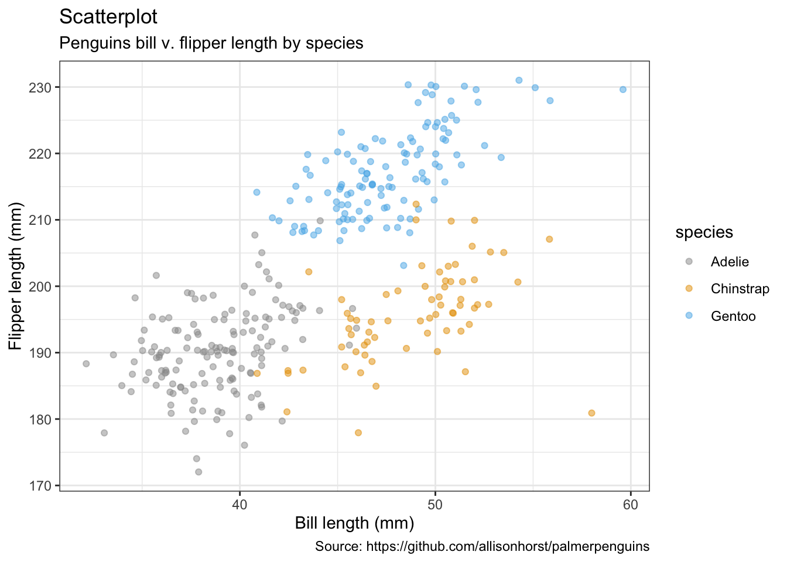
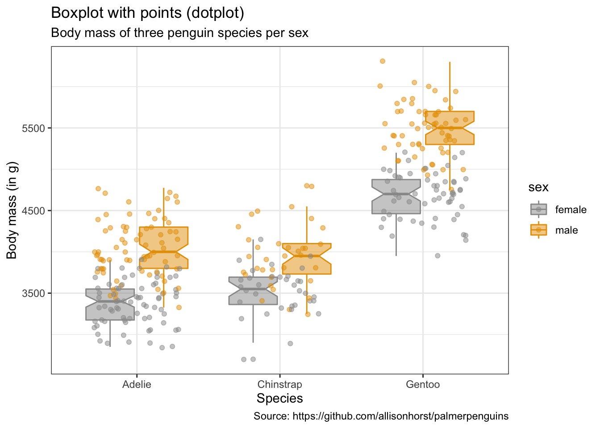
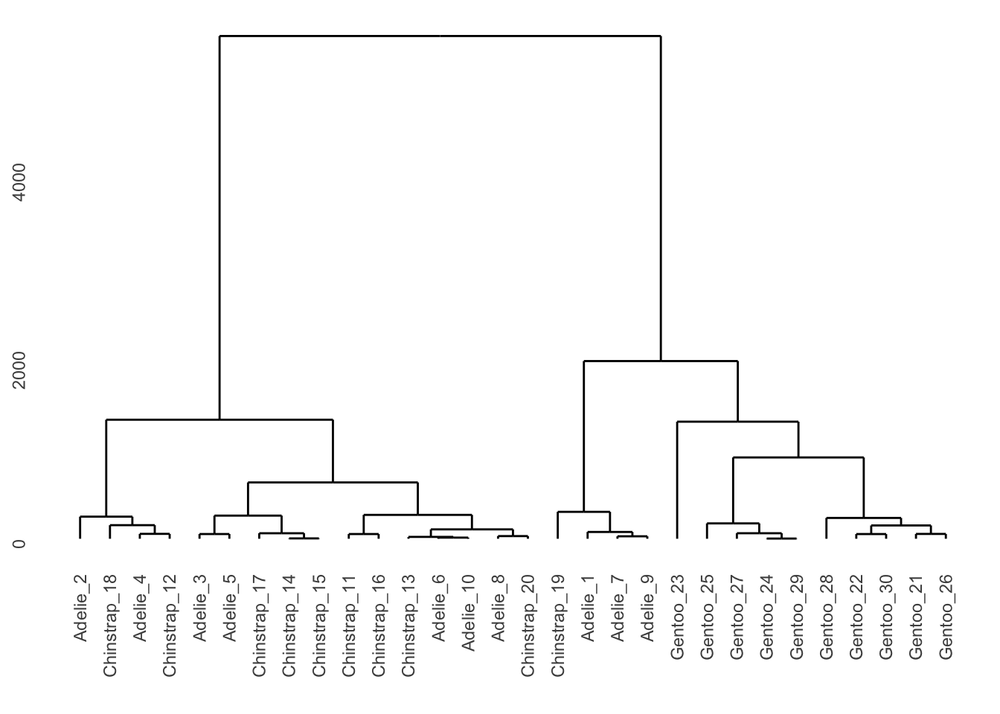

5 常用图形
library(tidyverse)
library(ggExtra)
library(ragg)
library(ggalluvial)
library(treemapify)
library(ggalt)
library(palmerpenguins)head(penguins)## # A tibble: 6 × 8
## species island bill_length_mm bill_depth_mm flipper_length_… body_mass_g sex
## <fct> <fct> <dbl> <dbl> <int> <int> <fct>
## 1 Adelie Torge… 39.1 18.7 181 3750 male
## 2 Adelie Torge… 39.5 17.4 186 3800 fema…
## 3 Adelie Torge… 40.3 18 195 3250 fema…
## 4 Adelie Torge… NA NA NA NA <NA>
## 5 Adelie Torge… 36.7 19.3 193 3450 fema…
## 6 Adelie Torge… 39.3 20.6 190 3650 male
## # … with 1 more variable: year <int>#head(penguins_raw)# The palette with grey:
cbp1 <- c("#999999", "#E69F00", "#56B4E9", "#009E73",
"#F0E442", "#0072B2", "#D55E00", "#CC79A7")
# The palette with black:
cbp2 <- c("#000000", "#E69F00", "#56B4E9", "#009E73",
"#F0E442", "#0072B2", "#D55E00", "#CC79A7")
library(plotrix)
sliceValues <- rep(10, 8) # each slice value=10 for proportionate slices
(
p <- pie3D(sliceValues,
explode=0,
theta = 1.2,
col = cbp1,
labels = cbp1,
labelcex = 0.9,
shade = 0.6,
main = "Colorblind\nfriendly palette")
)## [1] 0.3926991 1.1780972 1.9634954 2.7488936 3.5342917 4.3196899 5.1050881
## [8] 5.8904862ggplot <- function(...) ggplot2::ggplot(...) +
scale_color_manual(values = cbp1) +
scale_fill_manual(values = cbp1) + # note: needs to be overridden when using continuous color scales
theme_bw()penguins## # A tibble: 344 × 8
## species island bill_length_mm bill_depth_mm flipper_length_mm body_mass_g
## <fct> <fct> <dbl> <dbl> <int> <int>
## 1 Adelie Torgersen 39.1 18.7 181 3750
## 2 Adelie Torgersen 39.5 17.4 186 3800
## 3 Adelie Torgersen 40.3 18 195 3250
## 4 Adelie Torgersen NA NA NA NA
## 5 Adelie Torgersen 36.7 19.3 193 3450
## 6 Adelie Torgersen 39.3 20.6 190 3650
## 7 Adelie Torgersen 38.9 17.8 181 3625
## 8 Adelie Torgersen 39.2 19.6 195 4675
## 9 Adelie Torgersen 34.1 18.1 193 3475
## 10 Adelie Torgersen 42 20.2 190 4250
## # … with 334 more rows, and 2 more variables: sex <fct>, year <int>penguins_long <- penguins %>%
gather("key", "value", bill_length_mm:body_mass_g)penguins %>%
group_by(species) %>%
count(sex) %>%
arrange(desc(n))## # A tibble: 8 × 3
## # Groups: species [3]
## species sex n
## <fct> <fct> <int>
## 1 Adelie female 73
## 2 Adelie male 73
## 3 Gentoo male 61
## 4 Gentoo female 58
## 5 Chinstrap female 34
## 6 Chinstrap male 34
## 7 Adelie <NA> 6
## 8 Gentoo <NA> 5penguins %>%
gather("key", "value", bill_length_mm:body_mass_g) %>%
group_by(species, sex, island, key) %>%
summarise(n = n(),
sum = sum(value),
mean = mean(value),
median = median(value),
sd = sd(value),
se = sd(value) / sqrt(n()))## # A tibble: 52 × 10
## # Groups: species, sex, island [13]
## species sex island key n sum mean median sd se
## <fct> <fct> <fct> <chr> <int> <dbl> <dbl> <dbl> <dbl> <dbl>
## 1 Adelie female Biscoe bill_dept… 22 389. 17.7 17.7 1.09 0.233
## 2 Adelie female Biscoe bill_leng… 22 822. 37.4 37.8 1.76 0.376
## 3 Adelie female Biscoe body_mass… 22 74125 3369. 3375 343. 73.2
## 4 Adelie female Biscoe flipper_l… 22 4118 187. 187 6.74 1.44
## 5 Adelie female Dream bill_dept… 27 476. 17.6 17.8 0.897 0.173
## 6 Adelie female Dream bill_leng… 27 997. 36.9 36.8 2.09 0.402
## 7 Adelie female Dream body_mass… 27 90300 3344. 3400 212. 40.8
## 8 Adelie female Dream flipper_l… 27 5072 188. 188 5.51 1.06
## 9 Adelie female Torgersen bill_dept… 24 421. 17.6 17.4 0.880 0.180
## 10 Adelie female Torgersen bill_leng… 24 901. 37.6 37.6 2.21 0.451
## # … with 42 more rowspenguins %>%
group_by(species, sex, island, year) %>%
summarise_each(funs(sum,
mean,
median,
sd,
se = sd(.) / sqrt(n())
)
)## # A tibble: 35 × 24
## # Groups: species, sex, island [13]
## species sex island year bill_length_mm_… bill_depth_mm_s… flipper_length_…
## <fct> <fct> <fct> <int> <dbl> <dbl> <int>
## 1 Adelie fema… Biscoe 2007 187. 92.9 909
## 2 Adelie fema… Biscoe 2008 330. 155 1679
## 3 Adelie fema… Biscoe 2009 305. 142. 1530
## 4 Adelie fema… Dream 2007 341. 161. 1665
## 5 Adelie fema… Dream 2008 290. 142. 1512
## 6 Adelie fema… Dream 2009 366. 173. 1895
## 7 Adelie fema… Torge… 2007 306. 145. 1501
## 8 Adelie fema… Torge… 2008 293. 139. 1520
## 9 Adelie fema… Torge… 2009 302. 137. 1498
## 10 Adelie male Biscoe 2007 196. 91.5 908
## # … with 25 more rows, and 17 more variables: body_mass_g_sum <int>,
## # bill_length_mm_mean <dbl>, bill_depth_mm_mean <dbl>,
## # flipper_length_mm_mean <dbl>, body_mass_g_mean <dbl>,
## # bill_length_mm_median <dbl>, bill_depth_mm_median <dbl>,
## # flipper_length_mm_median <dbl>, body_mass_g_median <dbl>,
## # bill_length_mm_sd <dbl>, bill_depth_mm_sd <dbl>,
## # flipper_length_mm_sd <dbl>, body_mass_g_sd <dbl>, …5.1 散点图
penguins %>%
remove_missing() %>%
ggplot(aes(x = bill_length_mm, y = flipper_length_mm, color = species)) +
geom_jitter(alpha = 0.5) +
#facet_wrap(vars(species), ncol = 3) +
#scale_x_reverse() +
#scale_y_reverse() +
labs(x = "Bill length (mm)",
y = "Flipper length (mm)",
size = "body mass (g)",
title = "Scatterplot",
subtitle = "Penguins bill v. flipper length by species",
caption = "Source: https://github.com/allisonhorst/palmerpenguins")
penguins %>%
remove_missing() %>%
ggplot(aes(x = bill_length_mm, y = flipper_length_mm,
color = species, shape = species)) +
geom_point(alpha = 0.7) +
labs(x = "Bill length (mm)",
y = "Flipper length (mm)",
title = "Scatterplot",
subtitle = "Penguins bill v. flipper length by species",
caption = "Source: https://github.com/allisonhorst/palmerpenguins")- with labels/text
max_lables <- penguins %>%
remove_missing() %>%
group_by(species, island) %>%
summarise(bill_length_mm = max(bill_length_mm),
flipper_length_mm = max(flipper_length_mm))penguins %>%
remove_missing() %>%
ggplot(aes(x = bill_length_mm, y = flipper_length_mm,
color = species, shape = species)) +
geom_point(alpha = 0.7) +
geom_text(data = max_lables, aes(label = island)) +
labs(x = "Bill length (mm)",
y = "Flipper length (mm)",
title = "Scatterplot",
subtitle = "Penguins bill v. flipper length by species",
caption = "Source: https://github.com/allisonhorst/palmerpenguins")
- Jitter with smoothing line
penguins %>%
remove_missing() %>%
ggplot(aes(x = bill_length_mm, y = flipper_length_mm,
color = species, shape = species)) +
geom_jitter(alpha = 0.5) +
geom_smooth(method = "loess", se = TRUE) +
facet_wrap(vars(species), nrow = 3) +
labs(x = "Bill length (mm)",
y = "Flipper length (mm)",
title = "Scatterplot with smoothing line",
subtitle = "Penguins bill v. flipper length by species with loess smoothing line",
caption = "Source: https://github.com/allisonhorst/palmerpenguins")
penguins %>%
remove_missing() %>%
filter(species == "Adelie") %>%
ggplot(aes(x = bill_length_mm, y = flipper_length_mm)) +
geom_point(alpha = 0.5) +
geom_smooth(method = "loess", se = TRUE) +
labs(x = "Bill length (mm)",
y = "Flipper length (mm)",
title = "Scatterplot with smoothing line",
subtitle = "Penguins bill v. flipper length by species with\nloess smoothing line, histogram & density distribution",
caption = "Source: https://github.com/allisonhorst/palmerpenguins")
#(ggMarginal(p, type = "densigram", fill = "transparent"))5.2 气泡图
penguins %>%
remove_missing() %>%
ggplot(aes(x = bill_length_mm, y = flipper_length_mm,
color = species, shape = species, size = body_mass_g)) +
geom_point(alpha = 0.5) +
labs(x = "Bill length (mm)",
y = "Flipper length (mm)",
title = "Bubble plot",
size = "body mass (g)",
subtitle = "Penguins bill v. flipper length by species;\nsize indicates body mass in grams",
caption = "Source: https://github.com/allisonhorst/palmerpenguins")5.3 线性图
penguins %>%
remove_missing() %>%
filter(species == "Adelie") %>%
ggplot(aes(x = bill_length_mm, y = flipper_length_mm,
color = sex)) +
geom_line() +
geom_point() +
labs(x = "Bill length (mm)",
y = "Flipper length (mm)",
title = "Line plot",
subtitle = "Penguins bill v. flipper length by species and sex",
caption = "Source: https://github.com/allisonhorst/palmerpenguins")
5.4 相关系数图/热力图
mat <- penguins %>%
remove_missing() %>%
select(bill_depth_mm, bill_length_mm, body_mass_g, flipper_length_mm)
str(mat)## tibble [333 × 4] (S3: tbl_df/tbl/data.frame)
## $ bill_depth_mm : num [1:333] 18.7 17.4 18 19.3 20.6 17.8 19.6 17.6 21.2 21.1 ...
## $ bill_length_mm : num [1:333] 39.1 39.5 40.3 36.7 39.3 38.9 39.2 41.1 38.6 34.6 ...
## $ body_mass_g : int [1:333] 3750 3800 3250 3450 3650 3625 4675 3200 3800 4400 ...
## $ flipper_length_mm: int [1:333] 181 186 195 193 190 181 195 182 191 198 ...cormat <- round(cor(mat), 2)
cormat[upper.tri(cormat)] <- NA
cormat <- cormat %>%
as_data_frame() %>%
mutate(x = colnames(mat)) %>%
gather(key = "y", value = "value", bill_depth_mm:flipper_length_mm)
cormat %>%
remove_missing() %>%
arrange(x, y) %>%
ggplot(aes(x = x, y = y, fill = value)) +
geom_tile() +
scale_fill_gradient2(low = "blue", high = "red", mid = "white",
midpoint = 0, limit = c(-1,1), space = "Lab",
name = "Pearson\nCorrelation") +
theme(axis.text.x = element_text(angle = 45, vjust = 1, hjust = 1)) +
coord_fixed() +
labs(x = "",
y = "",
title = "Correlation heatmap",
subtitle = "Correlation btw. penguins' traits",
caption = "Source: https://github.com/allisonhorst/palmerpenguins")5.5 条形图
- per default: counts
penguins %>%
remove_missing() %>%
ggplot(aes(x = species,
fill = sex)) +
geom_bar() +
labs(x = "Species",
y = "Counts",
title = "Barchart",
subtitle = "Counts of male & female penguins per species in study",
caption = "Source: https://github.com/allisonhorst/palmerpenguins")
penguins %>%
remove_missing() %>%
ggplot(aes(x = species,
fill = sex)) +
geom_bar(position = 'dodge') +
labs(x = "Species",
y = "Counts",
title = "Barchart",
subtitle = "Counts of male & female penguins per species in study",
caption = "Source: https://github.com/allisonhorst/palmerpenguins")
- alternative: set y-values
penguins %>%
remove_missing() %>%
group_by(species, sex) %>%
summarise(mean_bmg = mean(body_mass_g),
sd_bmg = sd(body_mass_g)) %>%
ggplot(aes(x = species, y = mean_bmg,
fill = sex)) +
geom_bar(stat = "identity", position = "dodge") +
geom_errorbar(aes(ymin = mean_bmg - sd_bmg,
ymax = mean_bmg + sd_bmg),
width = 0.2,
position = position_dodge(0.9)) +
labs(x = "Species",
y = "Mean body mass (in g)",
title = "Barchart",
subtitle = "Mean body mass of male & female penguins per species\nwith standard deviation",
caption = "Source: https://github.com/allisonhorst/palmerpenguins")
library(plotly)
p <- penguins %>%
remove_missing() %>%
group_by(species, sex) %>%
summarise(mean_bmg = mean(body_mass_g),
sd_bmg = sd(body_mass_g)) %>%
ggplot(aes(x = species, y = mean_bmg,
fill = sex)) +
geom_bar(stat = "identity", position = "dodge") +
geom_errorbar(aes(ymin = mean_bmg - sd_bmg,
ymax = mean_bmg + sd_bmg),
width = 0.2,
position = position_dodge(0.9)) +
labs(x = "Species",
y = "Mean body mass (in g)",
title = "Barchart",
subtitle = "Mean body mass of male & female penguins per species\nwith standard deviation",
caption = "Source: https://github.com/allisonhorst/palmerpenguins")
ggplotly(p)5.6 箱线图
pp <- penguins %>%
remove_missing() %>%
ggplot(aes(x = species, y = body_mass_g,
fill = sex)) +
geom_boxplot() +
labs(x = "Species",
y = "Body mass (in g)",
title = "Boxplot",
subtitle = "Body mass of three penguin species per sex",
caption = "Source: https://github.com/allisonhorst/palmerpenguins")
ggplotly(pp)- with points
penguins %>%
remove_missing() %>%
ggplot(aes(x = species, y = body_mass_g,
fill = sex, color = sex)) +
geom_boxplot(alpha = 0.5, notch = TRUE) +
geom_jitter(alpha = 0.5, position=position_jitter(0.3)) +
labs(x = "Species",
y = "Body mass (in g)",
title = "Boxplot with points (dotplot)",
subtitle = "Body mass of three penguin species per sex",
caption = "Source: https://github.com/allisonhorst/palmerpenguins")
5.7 小提琴图
penguins %>%
remove_missing() %>%
ggplot(aes(x = species, y = body_mass_g,
fill = sex)) +
geom_violin(scale = "area") +
labs(x = "Species",
y = "Body mass (in g)",
title = "Violinplot",
subtitle = "Body mass of three penguin species per sex",
caption = "Source: https://github.com/allisonhorst/palmerpenguins")
- with dots (sina-plots)
penguins %>%
remove_missing() %>%
ggplot(aes(x = species, y = body_mass_g,
fill = sex, color = sex)) +
geom_dotplot(method = "dotdensity", alpha = 0.7,
binaxis = 'y', stackdir = 'center',
position = position_dodge(1)) +
labs(x = "Species",
y = "Body mass (in g)",
title = "Violinplot with points (dotplot)",
subtitle = "Body mass of three penguin species per sex",
caption = "Source: https://github.com/allisonhorst/palmerpenguins")
5.8 饼图
penguins %>%
remove_missing() %>%
group_by(species, sex) %>%
summarise(n = n()) %>%
mutate(freq = n / sum(n),
percentage = freq * 100) %>%
ggplot(aes(x = "", y = percentage,
fill = sex)) +
facet_wrap(vars(species), nrow = 1) +
geom_bar(stat = "identity", alpha = 0.8) +
coord_polar("y", start = 0) +
labs(x = "",
y = "Percentage",
title = "Piechart",
subtitle = "Percentage of male v. female penguins per species in study",
caption = "Source: https://github.com/allisonhorst/palmerpenguins")5.9 冲积图
as.data.frame(UCBAdmissions) %>%
ggplot(aes(y = Freq, axis1 = Gender, axis2 = Dept)) +
geom_alluvium(aes(fill = Admit), width = 1/12) +
geom_stratum(width = 1/12, fill = "black", color = "grey") +
geom_label(stat = "stratum", aes(label = after_stat(stratum))) +
scale_x_discrete(limits = c("Gender", "Dept"), expand = c(.05, .05)) +
labs(x = "",
y = "Frequency",
title = "Alluvial chart",
subtitle = "UC Berkeley admissions and rejections, by sex and department",
caption = "Source: Bickel et al. (1975)\nSex bias in graduate admissions: Data from Berkeley. Science, 187, 398–403.")
5.10 系谱图
as.data.frame(UCBAdmissions) %>%
group_by(Admit, Gender) %>%
summarise(sum_freq = sum(Freq)) %>%
ggplot(aes(area = sum_freq, fill = sum_freq, label = Gender,
subgroup = Admit)) +
geom_treemap() +
geom_treemap_subgroup_border() +
geom_treemap_subgroup_text(place = "centre", grow = T, alpha = 0.5, colour =
"black", fontface = "italic", min.size = 0) +
geom_treemap_text(colour = "white", place = "centre", reflow = T) +
scale_fill_gradient2(low = "#999999", high = "#E69F00", mid = "white", midpoint = 1000, space = "Lab",
name = "Sum of\nfrequencies") +
labs(x = "",
y = "",
title = "Treemap",
subtitle = "UC Berkeley admissions and rejections by sex",
caption = "Source: Bickel et al. (1975)\nSex bias in graduate admissions: Data from Berkeley. Science, 187, 398–403.")
5.11 哑铃图
penguins %>%
remove_missing() %>%
group_by(year, species, sex) %>%
summarise(mean_bmg = mean(body_mass_g)) %>%
mutate(species_sex = paste(species, sex, sep = "_"),
year = paste0("year_", year)) %>%
spread(year, mean_bmg) %>%
ggplot(aes(x = year_2007, xend = year_2009,
y = reorder(species_sex, year_2009))) +
geom_dumbbell(color = "#999999",
size_x = 3,
size_xend = 3,
#Note: there is no US:'color' for UK:'colour'
# in geom_dumbbel unlike standard geoms in ggplot()
colour_x = "#999999",
colour_xend = "#E69F00") +
labs(x = "Body mass (g)",
y = "Species & sex",
title = "Dumbbell plot",
subtitle = "Penguin's change in body mass from 2007 to 2009",
caption = "Source: https://github.com/allisonhorst/palmerpenguins")5.12 斜率图
penguins %>%
remove_missing() %>%
group_by(year, species, sex) %>%
summarise(mean_bmg = mean(body_mass_g)) %>%
ggplot(aes(x = year, y = mean_bmg, group = sex,
color = sex)) +
facet_wrap(vars(species), nrow = 3) +
geom_line(alpha = 0.6, size = 2) +
geom_point(alpha = 1, size = 3) +
scale_x_continuous(breaks=c(2007, 2008, 2009)) +
labs(x = "Year",
y = "Body mass (g)",
color = "Sex",
title = "Slope chart",
subtitle = "Penguin's change in body mass from 2007 to 2009",
caption = "Source: https://github.com/allisonhorst/palmerpenguins")
5.13 堆叠面积图
penguins %>%
remove_missing() %>%
group_by(year, species, sex) %>%
summarise(mean_bmg = mean(body_mass_g)) %>%
ggplot(aes(x = year, y = mean_bmg, fill = sex)) +
facet_wrap(vars(species), nrow = 3) +
geom_area(alpha = 0.6, size=.5, color = "white") +
scale_x_continuous(breaks=c(2007, 2008, 2009)) +
labs(x = "Year",
y = "Mean body mass (g)",
color = "Sex",
title = "Stacked area chart",
subtitle = "Penguin's change in body mass from 2007 to 2009",
caption = "Source: https://github.com/allisonhorst/palmerpenguins")
5.14 棒棒糖图
penguins %>%
remove_missing() %>%
group_by(year, species, sex) %>%
summarise(mean_bmg = mean(body_mass_g)) %>%
mutate(species_sex = paste(species, sex, sep = "_"),
year = paste0("year_", year)) %>%
spread(year, mean_bmg) %>%
ggplot() +
geom_segment(aes(x = reorder(species_sex, -year_2009), xend = reorder(species_sex, -year_2009),
y = 0, yend = year_2009),
color = "#999999", size = 1) +
geom_point(aes(x = reorder(species_sex, -year_2009), y = year_2009),
size = 4, color = "#E69F00") +
coord_flip() +
labs(x = "Species & sex",
y = "Body mass (g)",
title = "Lollipop chart",
subtitle = "Penguin's body mass in 2009",
caption = "Source: https://github.com/allisonhorst/palmerpenguins")
5.15 树状图
library(ggdendro)
library(dendextend)penguins_hist <- penguins %>%
filter(sex == "male") %>%
select(species, bill_length_mm, bill_depth_mm, flipper_length_mm, body_mass_g) %>%
group_by(species) %>%
sample_n(10) %>%
as.data.frame()
rownames(penguins_hist) <- paste(penguins_hist$species, seq_len(nrow(penguins_hist)), sep = "_")
penguins_hist <- penguins_hist %>%
select(-species) %>%
remove_missing()hc <- hclust(dist(penguins_hist, method = "euclidean"), method = "ward.D2")
ggdendrogram(hc)
# Create a dendrogram and plot it
penguins_hist %>%
scale %>%
dist(method = "euclidean") %>%
hclust(method = "ward.D2") %>%
as.dendrogram() %>%
plot()
5.16 瀑布图
library(waterfall)jaquith %>%
arrange(score) %>%
add_row(factor = "Total", score = sum(jaquith$score)) %>%
mutate(factor = factor(factor, levels = factor),
id = seq_along(score)) %>%
mutate(end = cumsum(score),
start = c(0, end[-length(end)]),
start = c(start[-length(start)], 0),
end = c(end[-length(end)], score[length(score)]),
gr_col = ifelse(factor == "Total", "Total", "Part")) %>%
ggplot(aes(x = factor, fill = gr_col)) +
geom_rect(aes(x = factor,
xmin = id - 0.45, xmax = id + 0.45,
ymin = end, ymax = start)) +
theme(axis.text.x = element_text(angle = 60, vjust = 1, hjust = 1),
legend.position = "none") +
labs(x = "",
y = "Amount",
title = "Waterfall chart",
subtitle = "Sample business-adjusted risk from Security Metrics",
caption = "Andrew Jaquith, Security Metrics: Replacing Fear, Uncertainty, and Doubt\n(Boston: Addison-Wesley Professional, 2007), 170-171.")5.17 双标图
library(ggfortify)penguins_prep <- penguins %>%
remove_missing() %>%
select(bill_length_mm:body_mass_g)
penguins_pca <- penguins_prep %>%
prcomp(scale. = TRUE)penguins_km <- penguins_prep %>%
kmeans(3)autoplot(penguins_pca,
data = penguins %>% remove_missing(),
colour = 'species',
shape = 'species',
loadings = TRUE,
loadings.colour = 'blue',
loadings.label = TRUE,
loadings.label.size = 3) +
scale_color_manual(values = cbp1) +
scale_fill_manual(values = cbp1) +
theme_bw() +
labs(
title = "Biplot PCA",
caption = "Source: https://github.com/allisonhorst/palmerpenguins")
autoplot(penguins_km,
data = penguins %>% remove_missing(),
colour = 'species',
shape = 'species',
frame = TRUE, frame.type = 'norm') +
scale_color_manual(values = cbp1) +
scale_fill_manual(values = cbp1) +
theme_bw() +
labs(
title = "Biplot k-Means clustering",
caption = "Source: https://github.com/allisonhorst/palmerpenguins")5.18 雷达图/星图/蜘蛛图
https://www.data-to-viz.com/caveat/spider.html
library(ggiraphExtra)penguins %>%
remove_missing() %>%
select(-island, -year) %>%
ggRadar(aes(x = c(bill_length_mm, bill_depth_mm, flipper_length_mm, body_mass_g),
group = species,
colour = sex, facet = sex),
rescale = TRUE,
size = 1, interactive = FALSE,
use.label = TRUE) +
scale_color_manual(values = cbp1) +
scale_fill_manual(values = cbp1) +
theme_bw() +
scale_y_discrete(breaks = NULL) + # don't show ticks
labs(
title = "Radar/spider/star chart",
subtitle = "Body mass of male & female penguins per species",
caption = "Source: https://github.com/allisonhorst/palmerpenguins")